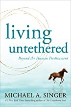

Living Untethered: Beyond the Human Predicament
Book·Michael A. Singer, 2022·活出不羁人生

A popular book of practices for observing thoughts and loosening psychological attachment. It should be distinguished from scientific mindfulness research.
- Author
- Michael A. Singer
- Year
- 2022
- Difficulty
- Beginner
- Kind
- Adjacent field
- Schools
- Third-Wave Therapies
Editions
- Chinese edition 《活出不羁人生》 [美] 迈克·A. 辛格 · tr. 易灵运 · 南京大学出版社 · 2024 Douban 9 (523 ratings) Douban page ↗
- English edition Living Untethered: Beyond the Human Predicament Michael A. Singer · New Harbinger, first edition · 2022 Open Library ↗